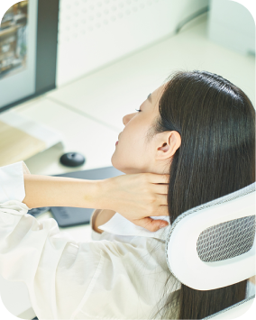
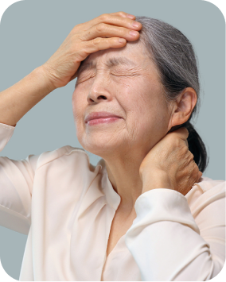
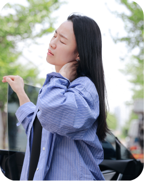

장시간 유지되는 자세
스마트폰을 오래 사용하면 목과 어깨 근육의 부담이 커질 수 있습니다.오랜 스마트폰 사용에 따른 근육 부담
근육과 근막에 통증 유발점이 생기면 목과 어깨가 지속적으로 뻐근하고
머리나 팔처럼 떨어진 부위까지 통증이 번질 수 있습니다.
같은 자세를 오래 유지하거나 특정 근육을 반복적으로 사용하면 목과 어깨의 긴장이 풀리지 않고 통증 유발점으로 이어질 수 있습니다.

스마트폰을 오래 사용하면 목과 어깨 근육의 부담이 커질 수 있습니다.오랜 스마트폰 사용에 따른 근육 부담

같은 동작을 반복하면 특정 근육에 과도한 긴장이 생길 수 있습니다.반복 동작으로 쌓이는 근육 긴장
무리한 운동이나 움직임이 근육 손상과 통증을 만들 수 있습니다.무리한 운동·움직임에 따른 손상·통증

긴장과 피로가 지속되면 통증이 회복되지 않고 반복될 수 있습니다.긴장·피로가 이어지며 반복되는 통증
목과 어깨 근육에 단단하게 뭉친 부위가 생기고 해당 부위를 누르면 주변이나 떨어진 곳까지 통증이 전달될 수 있습니다.
통증이 발생한 근육과 불균형 원인을 확인한 뒤 약물치료와 물리·운동치료를 함께 적용할 수 있습니다.
통증 유발점이 뚜렷한 경우에는 상태에 따라 주사치료를 고려합니다.

진통·소염제 등을 활용해 목과 어깨의 통증과 염증을 완화합니다.
긴장된 근육을 이완하고 목의 움직임과 기능을 회복하도록 돕습니다.


통증 유발점이나 신경 주변에 약물을 적용해 통증 완화를 돕습니다.
근막통증에서는 압통 부위의 통증이 주변이나 떨어진 부위로 느껴질 수 있습니다. 목디스크나 어깨 질환 등 비슷한 증상을 일으키는 원인도 함께 살펴봅니다.
오랜 시간 같은 자세나 반복적인 근육 사용 등 관련 요인이 계속될 수 있습니다. 치료와 함께 작업 환경 및 활동 습관을 점검하는 것이 중요합니다.
통증을 참으면서 세게 누르는 방식이 모든 사람에게 적합하지는 않습니다. 통증을 악화시키는 자극은 피하고, 상태에 맞는 이완과 운동 방법을 안내받으세요.